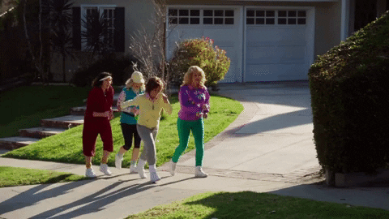

✦ ⚜ ✦
CESTA ZA
DALŠÍM SVATÝM
🏰 DALŠÍ ZASTÁVKA VAŠEHO DOBRODRUŽSTVÍ
📜 KAM TEĎ?
Ruthardskou jsme prošli a míříme dál,
uvidíme, co si pro nás osud nachystal.
Na vyhlídku dalšího svatého jdeme,
před jakým kostelem to asi najdeme?

📍 JSEM NA VYHLÍDCE SVATÉHO JAKUBATak šup, šup! Středověcí horníci nachodili víc a ještě si u toho museli svítit kahancem. 😈